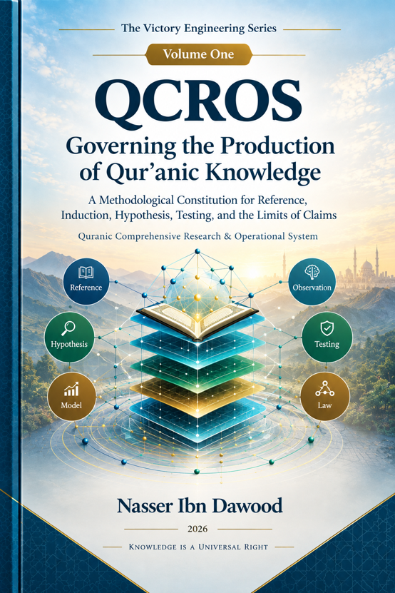

Nasser Ibn Dawood

Text extracted from the author-supplied Word edition; consult the original source.
Preparing the reader…
The Victory Engineering Series
Volume One
QCROS — Governing the Production of Qur’anic Knowledge
A Methodological Constitution for Reference, Induction, Hypothesis, Testing, and the Limits of Claims
Quranic Comprehensive Research & Operational System
Nasser Ibn Dawood — 2026
I. The Global Knowledge Manifesto
Knowledge is a universal right. The author firmly believes that wisdom should not be locked behind paywalls or language barriers.
Global Access Policy: All books in this library are available free of charge in multiple digital formats, including PDF, HTML, DOCX, and TXT.
The Digital Library: As of early 2026, the collection hosts 68 volumes, 34 in Arabic and 34 in English, fully optimized for AI-assisted research and digital archiving.
Official Platforms:
Main Website:
https://nasserhabitat.github.io/nasser-books-v2/
GitHub:
nasserhabitat/nasser-books
II. Translator’s Note: The Bridge of Meaning
This English edition is a condensed conceptual adaptation. It is not a word-for-word translation, but rather an “extraction of essence.” It presents the core philosophical and methodological framework in accessible English, omitting the exhaustive linguistic debates, technical records, and classical references found in the original Arabic text.
For the academic researcher: The original Arabic version remains the primary source for comprehensive linguistic analysis, detailed Qur’anic study and exegesis, and the complete bibliography.
The purpose of this English edition is therefore not to replace the Arabic original. It is to build a bridge of meaning: a concise entry point through which an international reader can understand the architecture of the project, its epistemological concerns, its research discipline, and the logic of QCROS.
III. The Victory Engineering Series
The title “Victory Engineering” may initially suggest a method for producing victory. That is not what this series claims.
The word “engineering” is used here in a structural sense. It refers to the study of relationships, constraints, stages, dependencies, and feedback mechanisms through which human action and human knowledge are formed and evaluated.
The series therefore does not promise victory, nor does it claim to possess a mechanical formula capable of producing it.
The first volume addresses the knowledge side of the project.
The second volume addresses the action side.
The distinction is fundamental:
Volume One:
QCROS — Governing the Production of Qur’anic Knowledge
Volume Two:
Engineering Support — From Governing Action to Reading Outcomes
The relationship between the two volumes is not repetition but methodological succession.
The first volume asks:
How can we control the transition from Qur’anic wording to observation, from observation to hypothesis, from hypothesis to testing, and from testing to a properly ranked conclusion?
The second volume asks:
Once knowledge has been disciplined, how can human action, responsibility, available capacity, interaction, and outcomes be governed without claiming ownership of the final result?
This distinction is expressed in the central principle of the series:
We engineer support and responsible action; we do not engineer victory itself.
IV. Introduction: From Interpreting Statements to Governing the Production of Knowledge
The contemporary problem of engaging with the Qur’an is not simply a shortage of interpretations.
There is already an enormous accumulated body of commentaries, linguistic studies, theological arguments, philosophical readings, legal traditions, and modern interpretations.